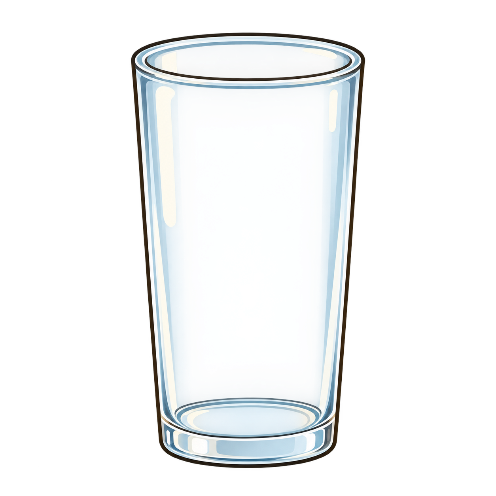
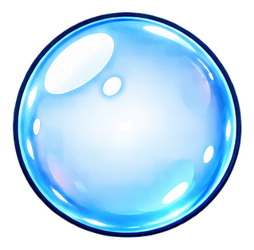
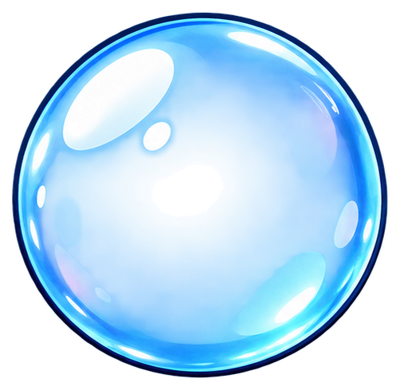
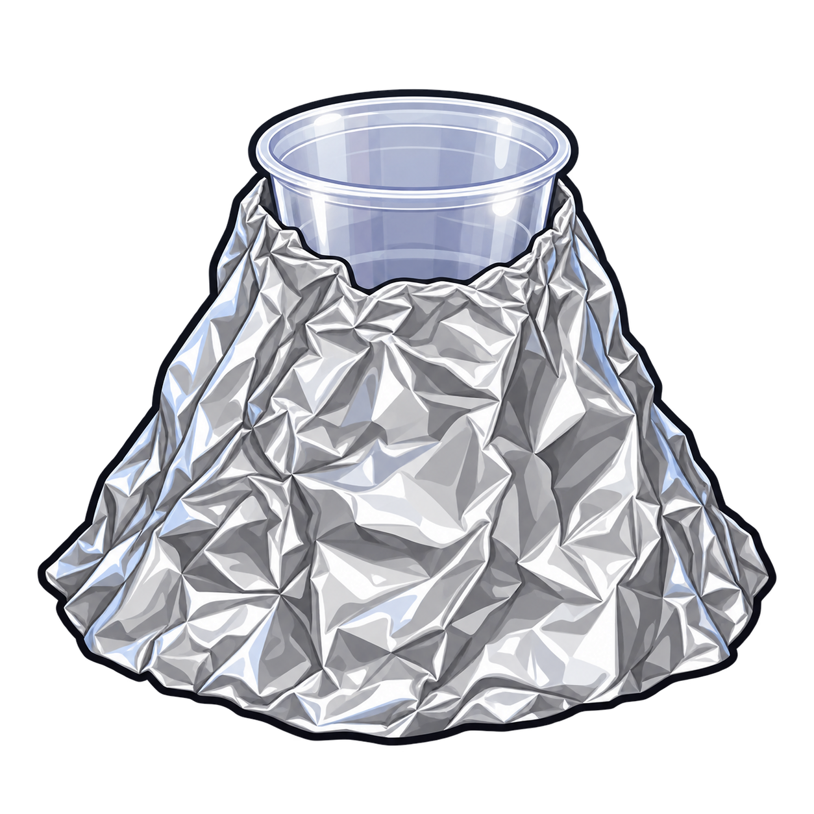
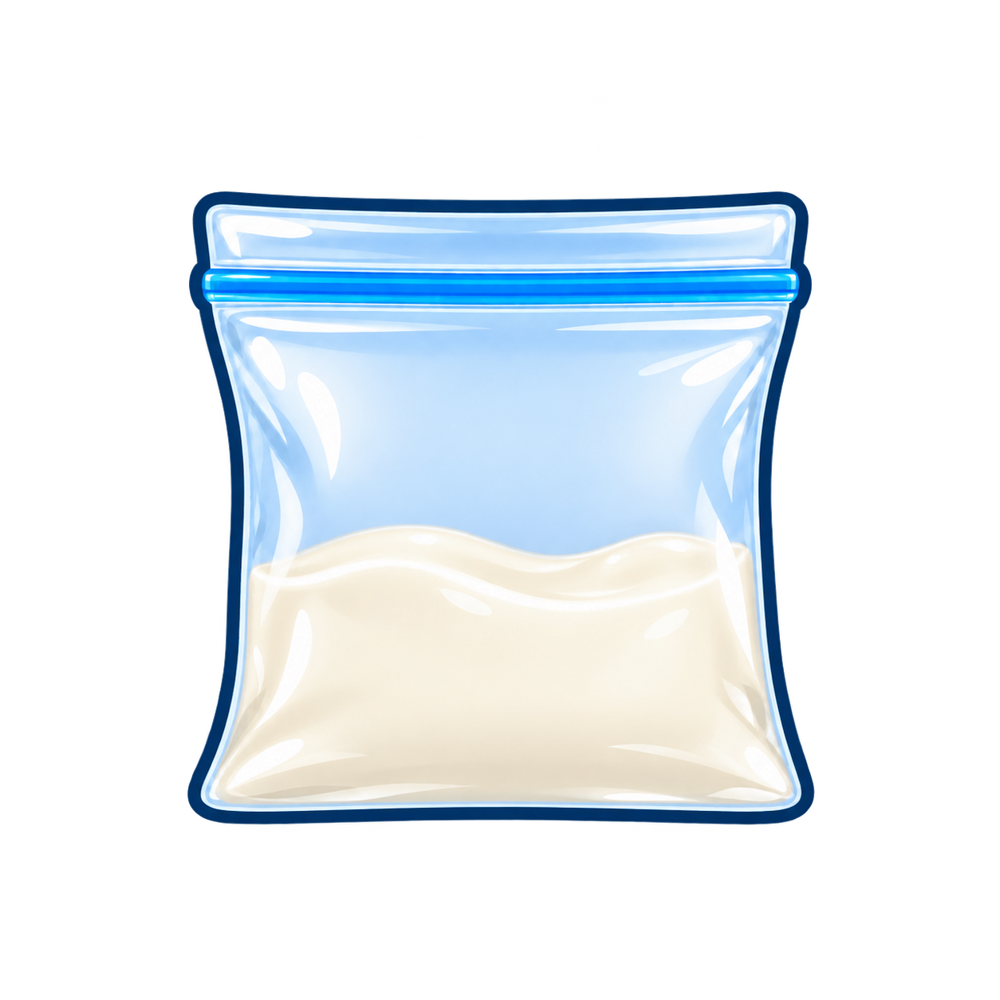
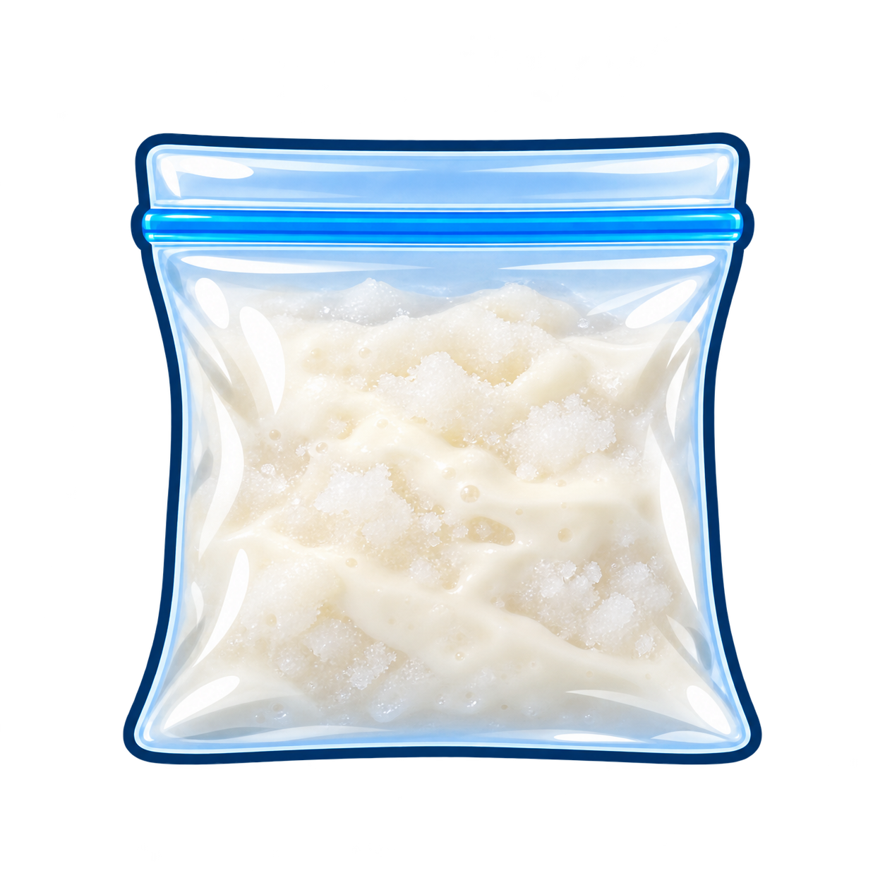
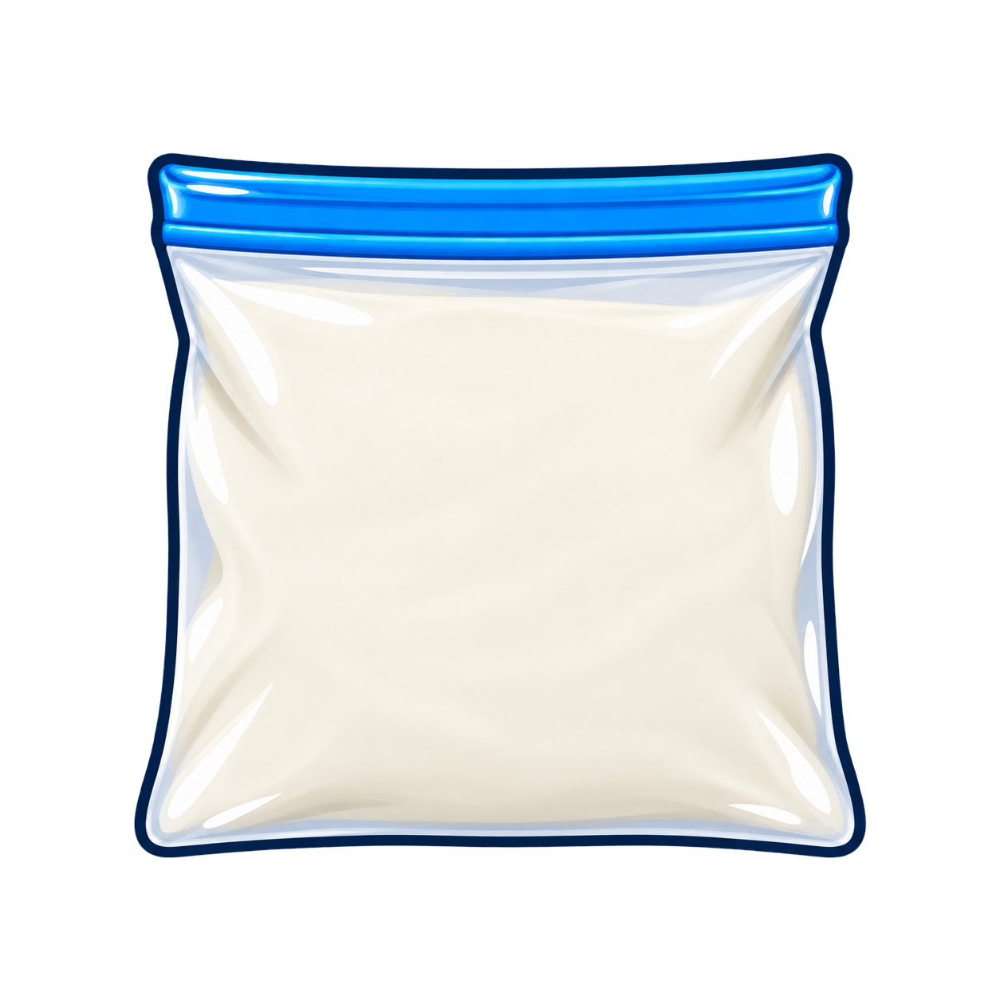

כל האנימציות משתמשות בנכסים גרפיים שכבר קיימים ב-www/stem/assets/props/ - אין צורך בתמונות נוספות (חוץ מ-3 קבצי הבועות החדשים).



stem_prop_bubble_*.png) עולות ב-CSS @keyframes עם עיכובים שונים לכל בועה.

stem_prop_foam_pink.png) משמשת בשני שלבים: קודם גדילה בתוך הכוס (#volcano-foam), ואז התפרצות/גלישה על המדרונות (#volcano-eruption) - שני שלבי CSS על אותו נכס גרפי, לולאה אחת של 3.5 שניות.



stem_prop_icecream_liquid/slushy/solid.png) מוחלפות ב-JS לפי טיימר, עם opacity transition חלק בין המצבים - בלי וידאו.